Từng bước từ lúc cài app đến khi có video: chọn bài trong SGK, chọn người dạy, để Muse quay và tự đọc lời từng cảnh, rồi app dựng thành reel 9:16 hoặc video ngang 16:9. Ảnh trong hướng dẫn chụp từ chính app.
Khi mở app, màn hình đầu tiên là Bài giảng. Thanh bên trái có ba mục dùng hằng ngày: Bài giảng, Kênh video ngắn, Hàng đợi. Mục Video KOL / KOC (Studio, tạo hàng loạt, ghép phim) đang hoàn thiện nên hiện mờ, chưa dùng được.
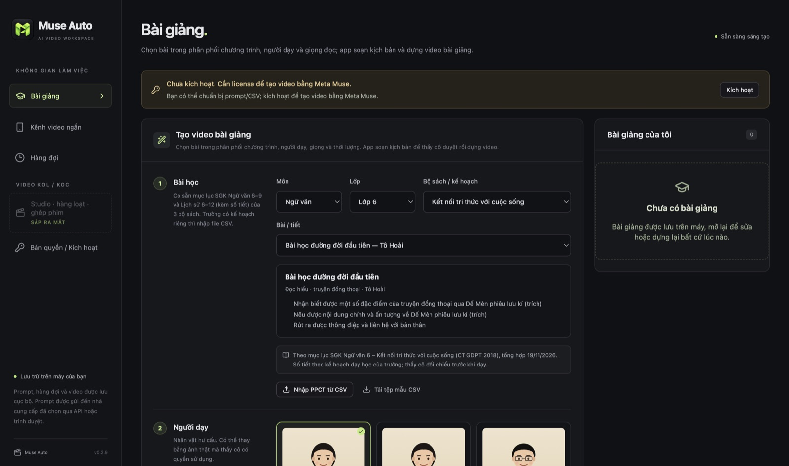
Màn hình Bài giảng. Mục Video KOL / KOC đang mờ (sắp ra mắt).
2Kích hoạt bản quyền
Bấm Bản quyền / Kích hoạt ở thanh bên.
Muốn dùng thử: bấm Copy mã thiết bị · Yêu cầu trial 1 ngày rồi gửi mã cho người bán. Khi mua hoặc gia hạn: bấm Copy mã thiết bị và gửi mã.
Người bán gửi lại mã license. Dán vào ô Mã license người bán cấp rồi bấm Kích hoạt. Nếu nhận được tệp license thì dùng nút nhập tệp.
Chưa kích hoạt vẫn chọn bài, soạn và sửa kịch bản được. License cần cho bước quay bằng Muse. License không bao gồm tài khoản hay lượt tạo video của Muse.
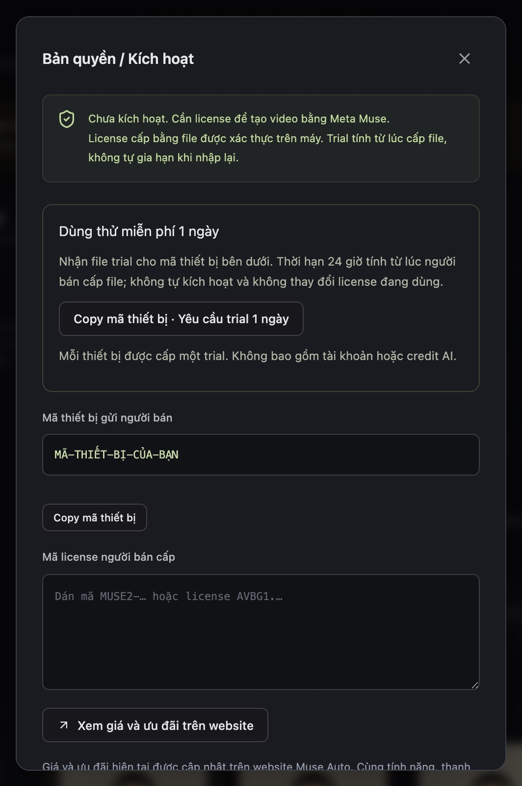
Hộp Bản quyền / Kích hoạt. Mã thiết bị trong ảnh đã được che.
Tự đăng nhập tài khoản Muse của bạn (email và mã OTP) trong cửa sổ đó.
Quay lại app, bấm Kiểm tra đăng nhập. Khi báo sẵn sàng là xong.
Giữ cửa sổ Chrome đó mở trong lúc quay. App chỉ thao tác trên trang web Muse như người dùng; mật khẩu và mã OTP do bạn tự nhập.
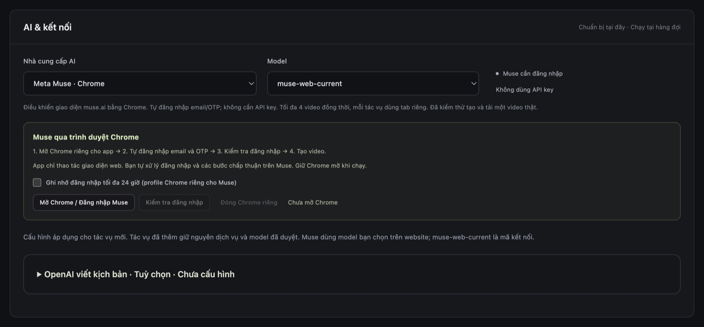
Hàng đợi › AI & kết nối: mở Chrome riêng, đăng nhập, kiểm tra.
02 / BÀI GIẢNG · KHUYÊN DÙNG
Muse quay và tự đọc.
Mỗi cảnh là một clip 10 giây do Muse quay như phim tài liệu. Muse tự đọc lời bằng giọng giáo viên miền Bắc, khớp khẩu hình. App ghép các cảnh, thêm tiêu đề, phụ đề, chuyển cảnh và cân bằng âm lượng. Mỗi cảnh dùng 1 lượt Muse: video 1 phút là 6 cảnh, tức 6 lượt.
1Chọn bài học
Ở bước Bài học, chọn Môn, Lớp, Bộ sách (Kết nối tri thức, Chân trời sáng tạo, Cánh diều), rồi chọn Bài / tiết.
Khung bên dưới hiện yêu cầu cần đạt, từ khoá và số tiết của bài. App dùng các ý này để soạn kịch bản.
Trường có kế hoạch dạy học riêng: bấm Tải tệp mẫu CSV, điền theo mẫu rồi Nhập PPCT từ CSV.
Có sẵn Ngữ văn 6–9 và Lịch sử 6–12. Mục lục được tổng hợp từ nguồn công khai. Mục nào có chữ "Cần đối chiếu SGK" thì thầy cô so lại với sách trước khi dạy.
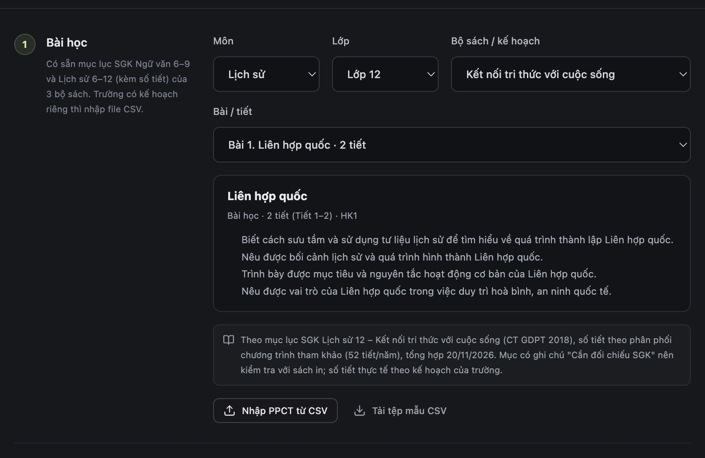
Ví dụ: Lịch sử 12 · Kết nối tri thức · Bài 1. Liên hợp quốc.
2Chọn người dạy
Chọn một trong các nhân vật có sẵn, hoặc bấm Thêm người dạy để đặt tên, trang phục, màu áo và cách xưng hô.
Muốn video giống thầy cô thật: chọn người dạy rồi bấm Dùng ảnh thật… và chọn ảnh chân dung rõ mặt.
Với người dạy tự tạo, điền Ngoại hình cố định và Trang phục cố định thật cụ thể. App lặp nguyên văn mô tả này ở mọi cảnh để Muse giữ đúng một người.
Chỉ dùng ảnh của chính bạn hoặc người đã đồng ý cho dùng ảnh để làm video.
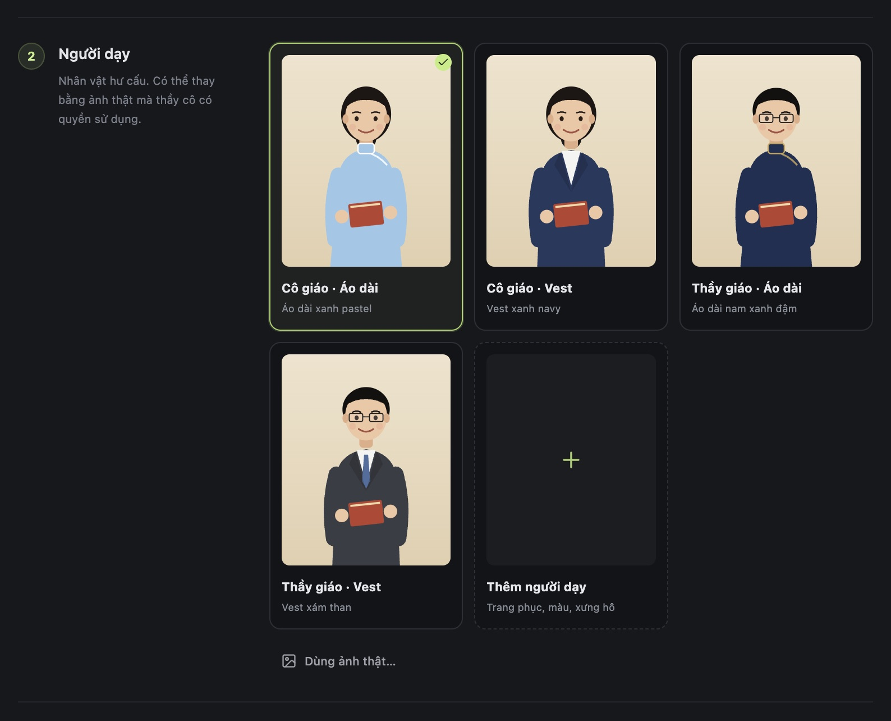
Bước Người dạy: nhân vật có sẵn và nút Thêm người dạy.
3Thêm người dạy của bạn
Hộp Thêm người dạy cho chọn tên hiển thị, giới tính (quyết định giọng nam hay nữ), kiểu và màu trang phục, cách xưng hô (cô, thầy, các em…). Người dạy tự tạo được lưu lại để dùng cho các bài sau.
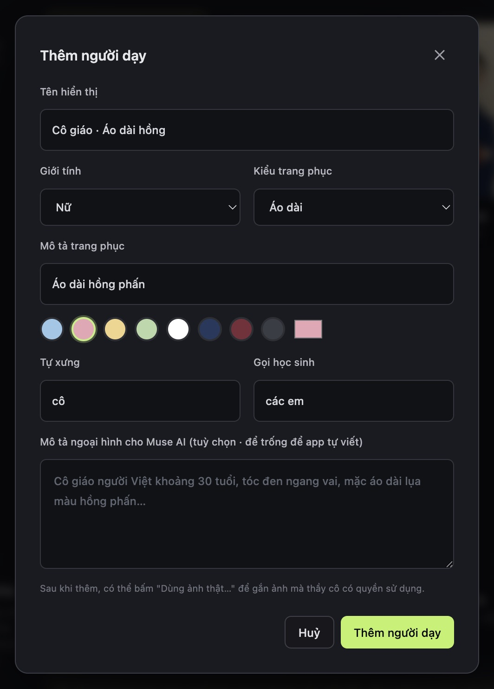
Thêm người dạy: trang phục, màu, xưng hô.
4Chọn cách làm, thời lượng, khung hình
Ở bước Cách làm video và giọng, chọn Muse quay và tự đọc (như thật).
Chọn Thời lượng. App ghi kèm số cảnh: 1 phút là 6 cảnh.
Chọn khung hình: 9:16 · Reel (tiêu đề trên, video giữa, phụ đề dưới; hợp TikTok, Reels, Shorts) hoặc 16:9 · Ngang (chiếu lớp, YouTube).
Tuỳ chọn: Tên kênh làm watermark, Chuyển cảnh hoà tan, Hiện lời giảng dưới video.
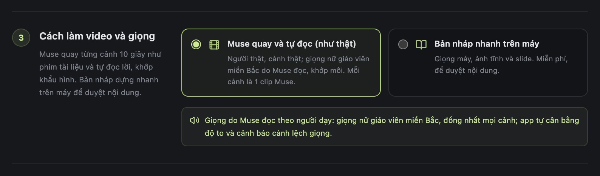
Chọn Muse quay và tự đọc.
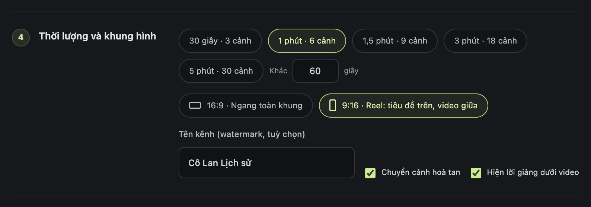
Thời lượng, khung hình, watermark, phụ đề.
5Nhập nội dung
Gõ Chủ đề video hoặc bấm một gợi ý.
Chọn Cách soạn:
Tự động: app dựng khung bài từ yêu cầu cần đạt.
Theo dàn ý của tôi: mỗi ý một dòng.
Giữ nguyên lời văn: app chỉ chia đoạn ở cuối câu, không sửa chữ.
Kịch bản cảnh: bạn viết sẵn từng cảnh (khuyên dùng khi đã có kịch bản).
Người soạn kịch bản: Mẫu soạn sẵn miễn phí, chạy trên máy; Claude AI đang thử nghiệm và cần API key riêng.
Kịch bản cảnh viết mỗi dòng một cảnh 10 giây, các phần cách nhau bằng dấu |. GV là cảnh giáo viên nói trước ống kính, TM là cảnh thuyết minh, không có giáo viên. Dòng đầu tuỳ chọn BỐI CẢNH: mô tả bối cảnh chung.
BỐI CẢNH: thư viện trường học sáng sủa, giá sách gỗ
GV | Mở bài | Các em có biết tổ chức nào có gần hai trăm nước thành viên không? | Cô giáo đứng cạnh quả địa cầu, máy quay tiến chậm
TM | Ra đời | Ngày 24/10/1945, Hiến chương Liên hợp quốc chính thức có hiệu lực. | Thành phố cảng những năm 1940, cờ nhiều nước bay, quay từ xa
Lời mỗi cảnh tối đa khoảng 28 âm tiết khi đọc. Năm 1945 đọc là "một nghìn chín trăm bốn mươi lăm", tức 8 âm tiết. Cứ viết số bình thường: app tự đổi thành chữ trong lời gửi Muse, còn phụ đề vẫn giữ số.
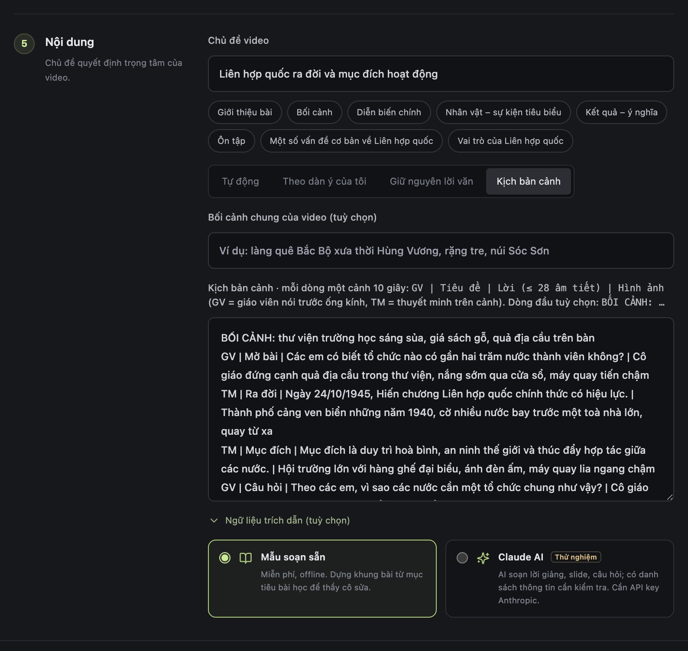
Bước Nội dung với tab Kịch bản cảnh.
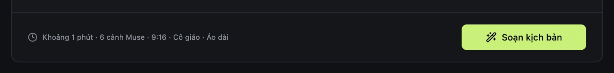
Kiểm tra dòng tóm tắt rồi bấm Soạn kịch bản. Bước này chưa gửi gì lên Muse.
6Duyệt và sửa từng cảnh
App mở bài vừa soạn: tiêu đề, người dạy, giọng, khung hình, thời lượng ước tính.
Mỗi cảnh có loại cảnh, tiêu đề, lời, hình ảnh. Ô màu cho biết số âm tiết khi đọc; quá dài thì tách thành hai cảnh.
Bấm Prompt gửi Muse để xem chính xác nội dung sẽ gửi.
Dùng mũi tên để đổi thứ tự, thùng rác để xoá; nút thêm cảnh ở cuối danh sách.
Phần Hình ảnh nên nêu cụ thể địa điểm, thời gian, ánh sáng, cách máy quay chuyển động. Không yêu cầu chữ, bản đồ có nhãn hay sơ đồ trong hình: Muse không vẽ chữ chuẩn được. Chữ và mốc thời gian để phụ đề hiển thị.
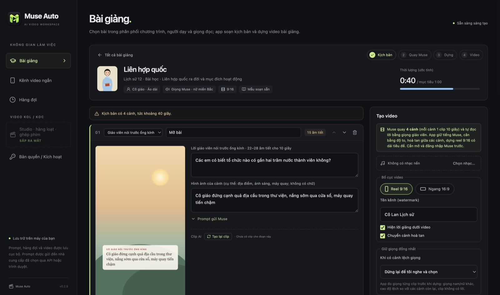
Bài đã soạn: 4 cảnh, khoảng 40 giây.
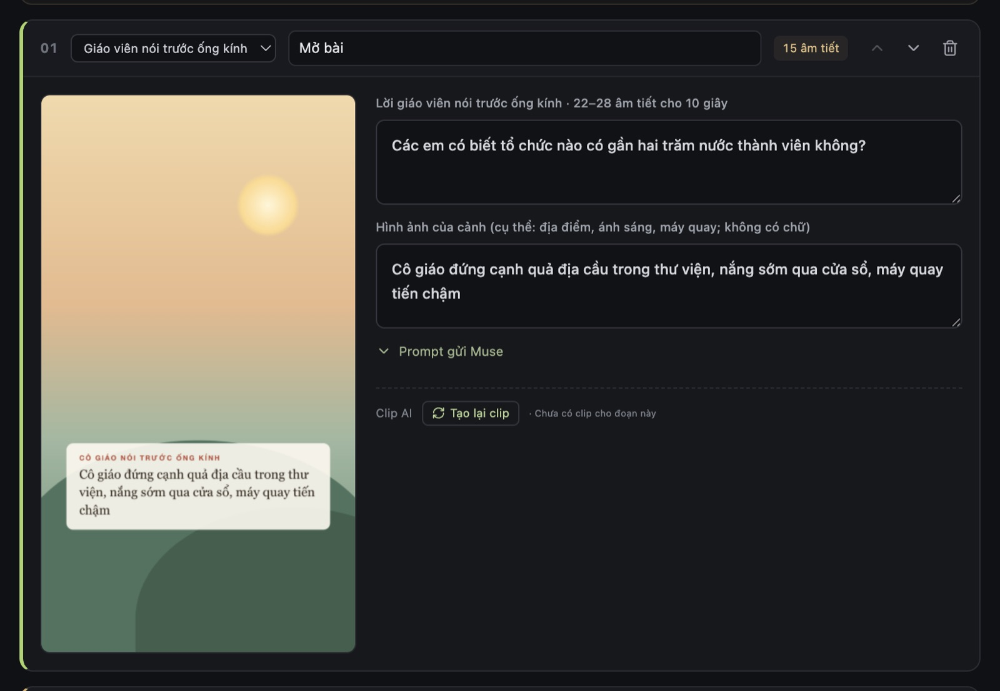
Sửa lời, hình ảnh và xem prompt của từng cảnh.
7Bố cục, giữ giọng, rồi tạo video
Ở khung Tạo video bên phải: chọn Reel 9:16 hoặc Ngang 16:9. Đổi bố cục sau khi đã quay chỉ dựng lại, không tốn lượt Muse.
Giữ giọng đồng nhất: mặc định là Dừng lại để tôi nghe và chọn. Bạn có thể cho app tự quay lại cảnh lệch giọng, tối đa 1–5 lượt cho mỗi bài.
Tuỳ chọn Chọn nhạc… để thêm nhạc nền.
Bấm Tạo video. Hộp xác nhận ghi rõ số cảnh sẽ gửi, cũng là số lượt Muse sẽ dùng. Bấm Gửi N cảnh cho Muse.
Nút Tạo video chỉ bấm được khi Muse đã đăng nhập (bước Kết nối Muse).
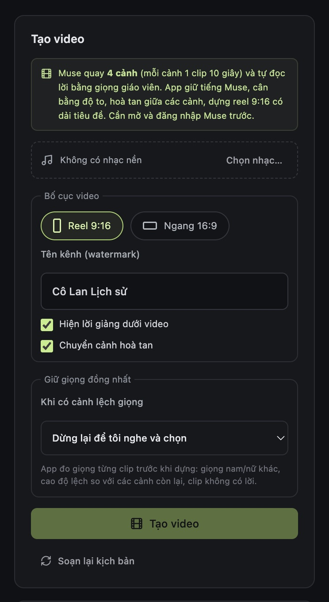
Khung Tạo video: bố cục, watermark, phụ đề, giữ giọng.
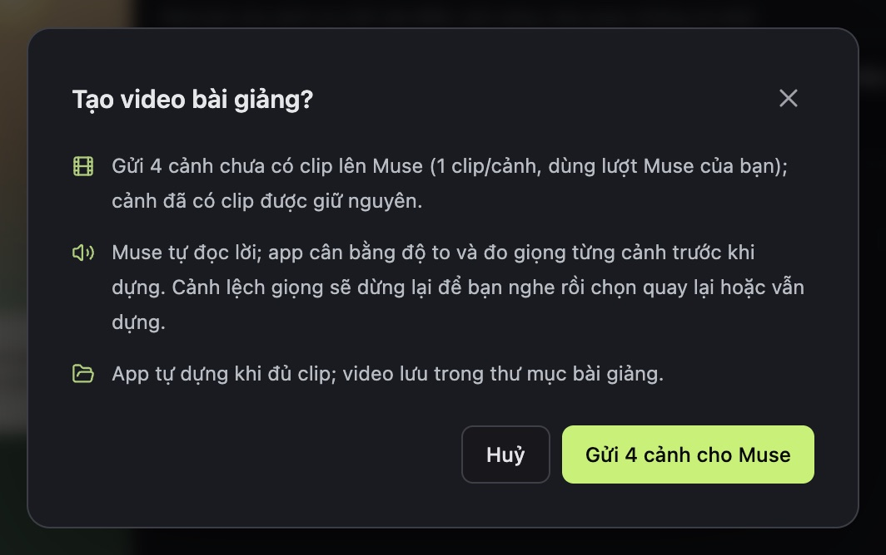
Hộp xác nhận ghi rõ số lượt Muse.
8Chờ Muse quay
App gửi tối đa 4 cảnh cùng lúc, mỗi cảnh thường mất 1–3 phút.
Trong lúc chờ, bạn có thể sang màn hình khác. Giữ bài giảng mở để app tự dựng khi đủ clip; nếu lỡ đóng, mở lại bài để dựng tiếp.
Đôi khi Muse trả lời bằng chữ mà không có video. Khi đó app tự gửi lại ở cuộc trò chuyện mới, tối đa 3 lần. Vẫn lỗi thì app báo để bạn sửa mô tả cảnh rồi bấm Tạo lại clip.
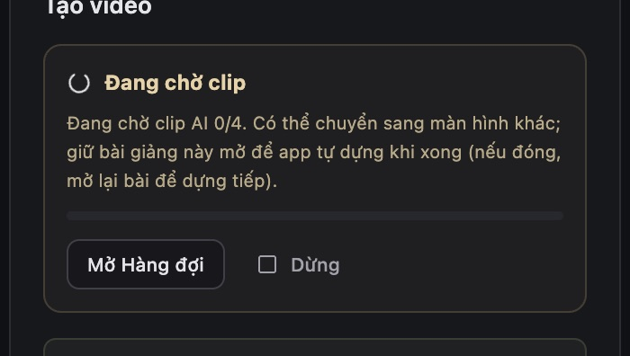
Tiến độ: số clip đã có trên tổng số cảnh.
9Kiểm tra giọng giữa các cảnh
Muse tạo lại giọng ở mỗi clip, nên app gửi kèm cùng một mô tả giọng cho mọi cảnh. Trước khi dựng, app đo giọng từng clip. Nếu một cảnh có giọng khác giới, cao độ lệch nhiều so với các cảnh khác hoặc gần như không có lời, app dừng lại và liệt kê cảnh đó. Bạn chọn:
Quay lại N cảnh lệch giọng: mỗi cảnh tốn thêm 1 lượt Muse.
Vẫn dựng với giọng này: giữ các clip hiện có.
Nghe lại cảnh được báo trước khi quyết định. Đôi khi tiếng ồn nền làm số đo lệch dù giọng vẫn ổn.
10Xem và xuất video
Khi đủ clip, app tự dựng. Khung Video đã sẵn sàng có Phát video, Mở thư mục, Lưu bản sao… (xuất ra nơi khác, không ghi đè tệp có sẵn).
Cảnh nào chưa ưng: chọn clip khác của cảnh đó nếu đã có nhiều bản, hoặc bấm Tạo lại clip (1 lượt Muse). Dựng lại từ clip đã có không tốn lượt.
Xem lại toàn bộ video và kiểm tra kiến thức trước khi đăng.
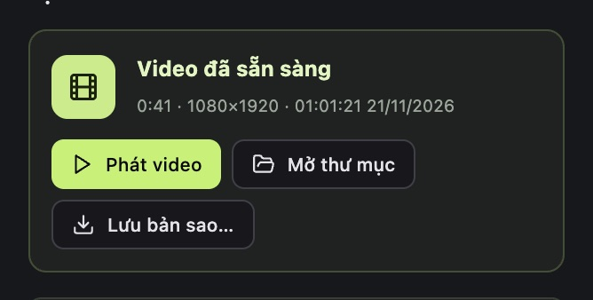
Video đã sẵn sàng: phát, mở thư mục, lưu bản sao.
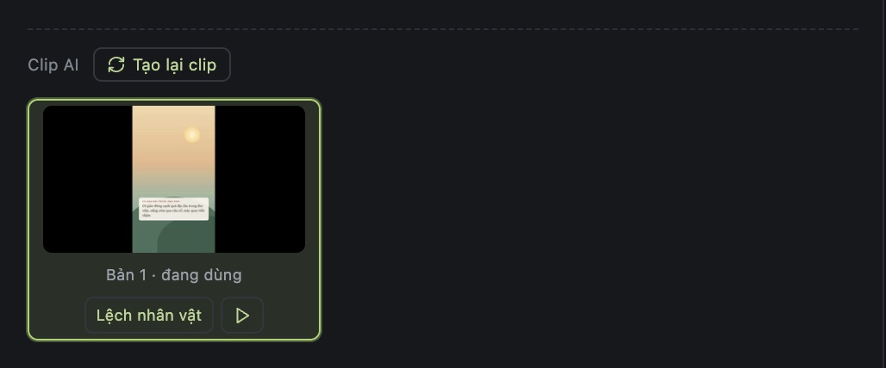
Clip của từng cảnh và nút Tạo lại clip.
03 / BÀI GIẢNG · MIỄN PHÍ
Bản nháp nhanh trên máy.
Dùng để duyệt nội dung trước khi tốn lượt Muse, hoặc làm nhanh video slide. Giọng máy hoặc thu âm của thầy cô, kèm slide và ảnh tĩnh. Tất cả chạy trên máy, không tốn phí.
1Chọn Bản nháp nhanh trên máy
Ở bước Cách làm video và giọng, chọn Bản nháp nhanh trên máy.
Chọn giọng: giọng máy tiếng Việt có sẵn trên Mac (ví dụ Linh) với Nghe thử và Tốc độ đọc, hoặc dùng bản thu âm của thầy cô.
Nhập nội dung như bước 5 phần Muse, rồi bấm Soạn kịch bản.
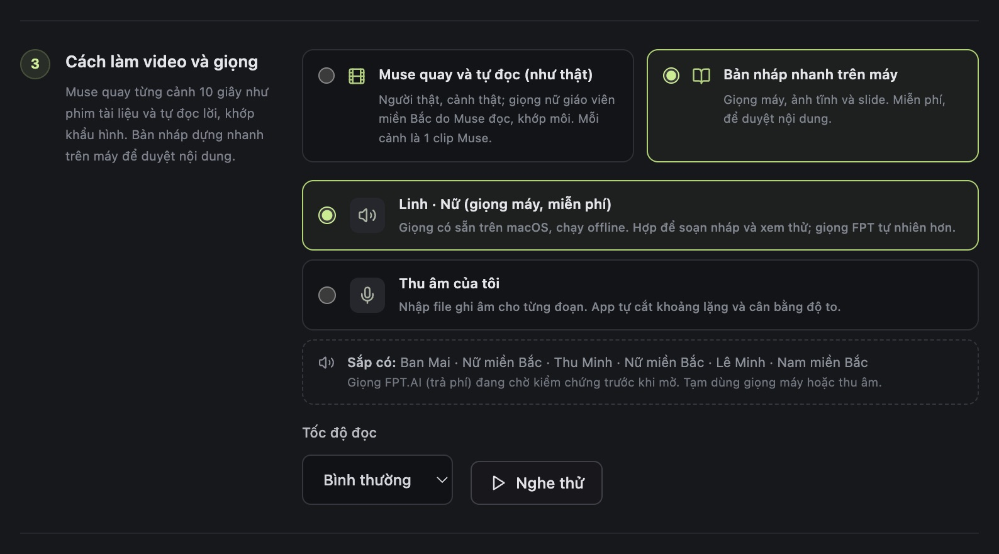
Bản nháp: chọn giọng máy hoặc thu âm.
2Sửa, dựng và lưu
Mỗi đoạn có lời giảng, tiêu đề slide hoặc mô tả hình. Sửa xong bấm Lưu đoạn.
Bấm Tạo video: app tạo giọng, dựng slide, phụ đề và xuất MP4.
Có thể thay giọng máy của một đoạn bằng bản thu âm; app tự cân bằng độ to.
Mọi bài giảng nằm trong Bài giảng của tôi để mở lại, sửa hoặc dựng lại.
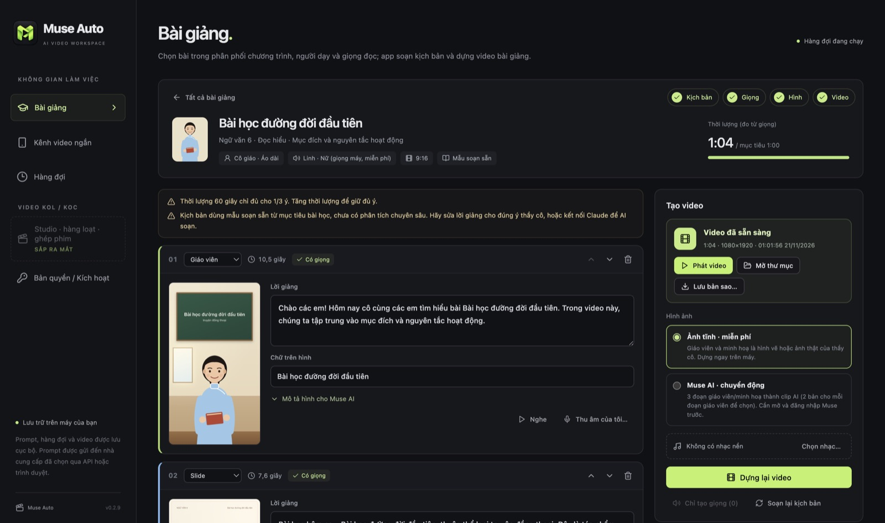
Bản nháp đã dựng xong.
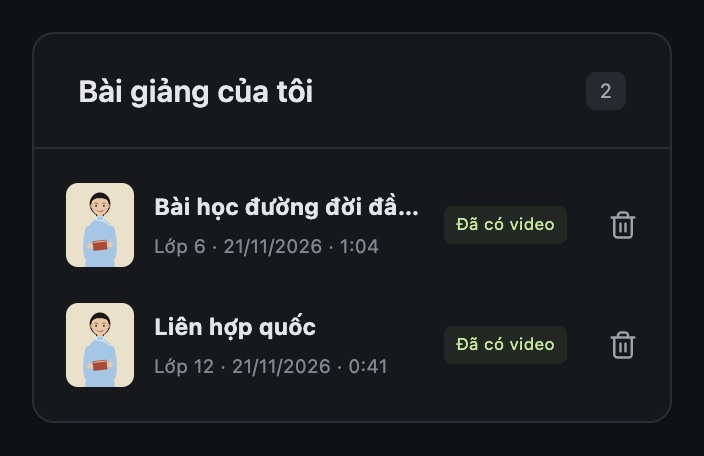
Bài giảng của tôi.
04 / VIDEO DỌC 9:16
Kênh video ngắn.
Dành cho kênh TikTok, Reels, Shorts ôn tập: quiz đếm ngược, bảng so sánh, timeline, đúng/sai, giải thích, kể chuyện, kỹ năng làm bài. Bạn soạn nội dung, app dựng đồ hoạ trên máy.
1Nhập kế hoạch kênh
Vào Kênh video ngắn › Kế hoạch kênh, bấm Chọn tệp .xlsx.
Tệp Excel có một sheet cho mỗi dạng video (Giải thích, So sánh, Quiz, Timeline…). Mỗi sheet có các cột Mã, Tiêu đề video, Nhóm kiến thức. Sheet Tổng quan (tuỳ chọn) chứa tên kênh.
Bấm Xếp lịch để chia ngày đăng. Mỗi ý tưởng có gợi ý bài SGK liên quan, trạng thái, link đăng và số liệu xem.
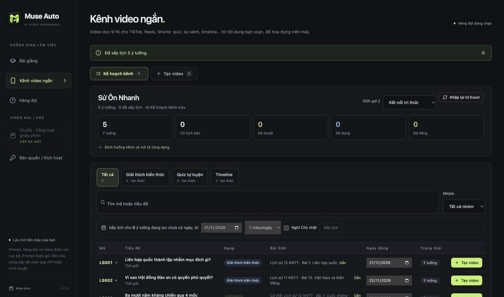
Kế hoạch kênh: ý tưởng, dạng video, lịch đăng.
2Tạo video từ một ý tưởng
Bấm Tạo video ở dòng ý tưởng: mã và tiêu đề được điền sẵn.
Dán bảng nội dung từ Excel hoặc Google Sheets. Ví dụ quiz có các cột Câu hỏi | A | B | C | D | Đáp án | Giải thích. Bấm Tải tệp mẫu CSV nếu cần mẫu.
Chọn giọng, tên kênh, câu kêu gọi cuối video, rồi bấm Tạo video.
Xem từng cảnh, sửa, đánh dấu đã đối chiếu kiến thức, rồi Dựng video. Bước này miễn phí, không gọi AI.
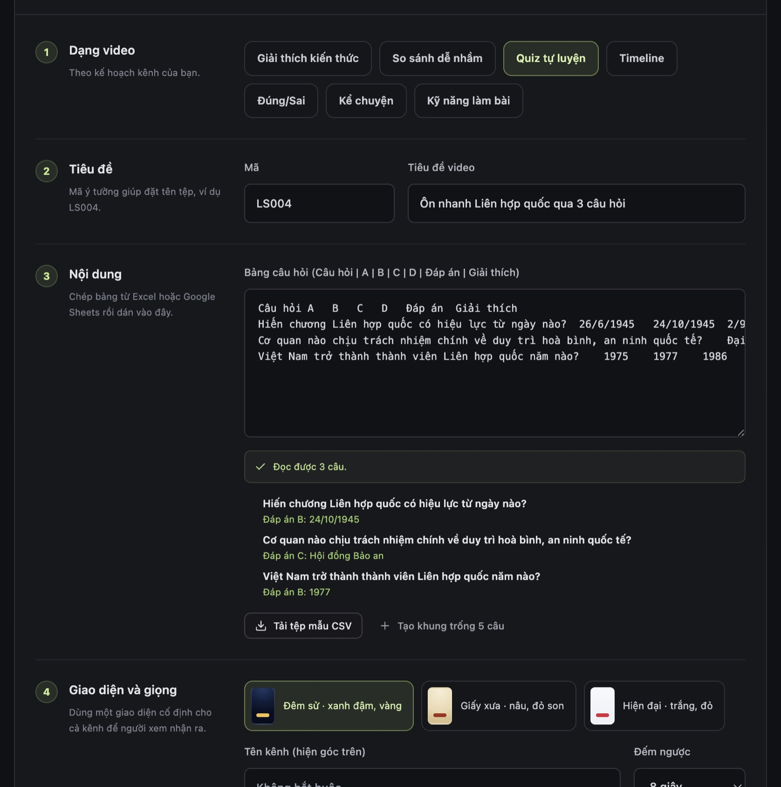
Dán bảng câu hỏi; app đọc và báo số câu hợp lệ.
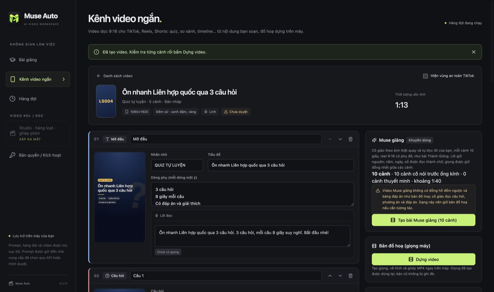
Xem trước từng cảnh 9:16.
3Muse giảng (khuyên dùng)
Muốn video ngắn có cô giáo thật nói như phần Bài giảng: mở video ngắn, tìm khung Muse giảng, bấm Tạo bài Muse giảng. App giữ nguyên lời bạn viết, chia thành các cảnh 10 giây theo số âm tiết và tạo một bài ở màn Bài giảng (9:16, có phụ đề). Bước này chưa gửi gì lên Muse. Bạn duyệt rồi quay như mục 2.
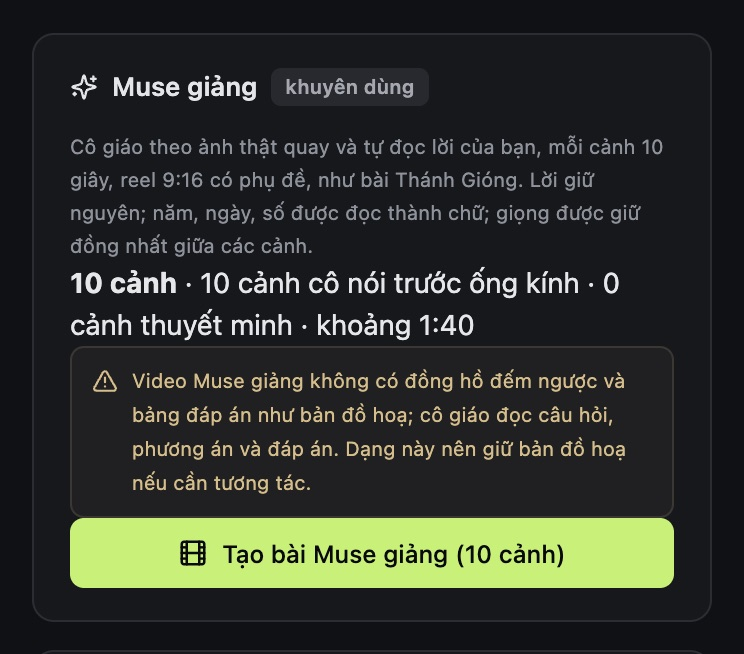
Khung Muse giảng trong video ngắn.
05 / THEO DÕI
Hàng đợi và xử lý lỗi.
Hàng đợi liệt kê mọi clip đã gửi: chờ, đang xử lý, đã xong, cần chú ý. Có nút Bắt đầu, Tạm dừng và số luồng chạy cùng lúc.
Tự gửi lại: khi Muse báo không tạo được video, app tự gửi lại ở cuộc trò chuyện mới, tối đa 3 lần. Sau 4 lần vẫn lỗi, tác vụ báo lỗi để bạn sửa mô tả cảnh.
Chưa rõ kết quả: nếu mất mạng hoặc tắt app đúng lúc đang gửi, app không biết Muse đã nhận hay chưa. Tác vụ đó tạm chặn mọi lượt gửi mới để tránh tốn lượt hai lần. Mở Muse kiểm tra: nếu đã có video, bấm Nhập mã tác vụ và dán link cuộc trò chuyện; nếu chưa có, huỷ tác vụ rồi gửi lại.
Xuất lỗi tạo tệp danh sách tác vụ lỗi để gửi hỗ trợ.
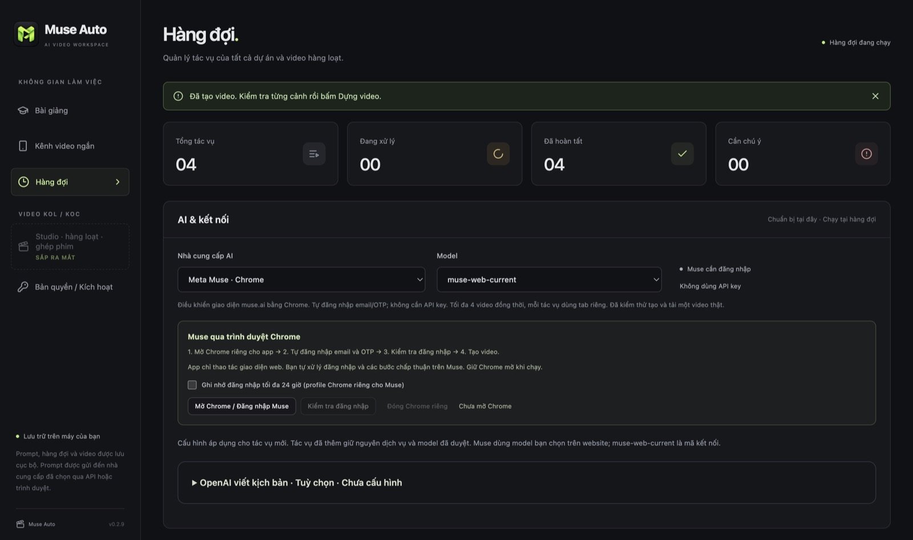
Hàng đợi chung của mọi bài giảng và video.
06 / KINH NGHIỆM
Mẹo để video đẹp, đọc đúng.
Lời ngắn, rõ
Mỗi cảnh khoảng 22–28 âm tiết khi đọc. Câu dài tách thành hai cảnh ở chỗ ngắt tự nhiên.
Số và năm
Viết số bình thường. App đổi thành chữ khi gửi Muse để Muse không đọc từng chữ số; phụ đề vẫn giữ số.
Không chữ trong hình
Muse không vẽ chữ chuẩn. Đừng yêu cầu bảng, bản đồ có nhãn, timeline, lịch trong hình. Để chữ cho phụ đề và tiêu đề.
Nhân vật lịch sử
Không mô tả để Muse dựng mặt nhân vật lịch sử có thật. Dùng ảnh tư liệu, góc xa, bóng lưng hoặc ngược sáng.
Cảnh nhạy cảm
Muse hay từ chối cảnh trẻ em đi cùng vũ khí, chiến tranh, cảnh thương vong. Hãy mô tả gián tiếp: cờ, bản đồ, đoàn người từ xa.
Một người, một giọng
Giữ mô tả ngoại hình và trang phục cố định. Nghe lại các cảnh app báo lệch giọng trước khi đăng.
07 / HỎI ĐÁP
Câu hỏi thường gặp.
Một video tốn bao nhiêu lượt Muse?
Bằng số cảnh: mỗi cảnh 10 giây là 1 lượt. Video 1 phút là 6 lượt. Có thể tốn thêm nếu bạn chọn quay lại cảnh lệch giọng, hoặc bấm Tạo lại clip. Các lần app tự gửi lại khi Muse báo lỗi (tối đa 3 lần mỗi cảnh) là gửi lại cảnh chưa có video.
Video được lưu ở đâu?
Trong thư mục bài giảng trên máy. Bấm Mở thư mục để xem, hoặc Lưu bản sao… để xuất ra nơi khác. App không ghi đè tệp có sẵn.
Đổi 9:16 sang 16:9 có phải quay lại không?
Không. Đổi bố cục rồi bấm Dựng lại video: app dựng từ clip đã có, không tốn lượt Muse.
Đang quay thì mất mạng?
Các cảnh đã gửi xong vẫn được theo dõi khi có mạng lại. Cảnh đang gửi dở có thể chuyển sang "chưa rõ kết quả". Xem mục Hàng đợi ở trên để xử lý mà không tốn lượt hai lần.
Muse đọc sai từ hoặc tên riêng?
Sửa lời trong cảnh cho dễ đọc, ví dụ viết phiên âm tên nước ngoài, rồi Tạo lại clip cho cảnh đó. Xem trước nội dung gửi bằng Prompt gửi Muse.
Studio, video KOL/KOC ở đâu?
Các tính năng làm video sản phẩm cho KOL/KOC (Studio dự án, tạo video hàng loạt, ghép phim) đang được hoàn thiện. Trong bản 0.2.9 chúng hiện mờ ở thanh bên và sẽ mở lại ở bản sau.
Có bản Windows không?
Bản Windows hiện là 0.2.5, chưa có Bài giảng và Kênh video ngắn. Bản 0.2.9 hiện chỉ có trên macOS.